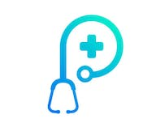
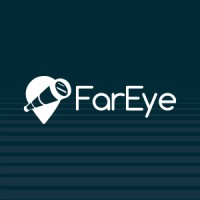
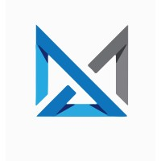
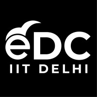

Hi, I'm Rajveer.
Passionate about technology with a background in Engineering Physics, I'm Rajveer, a dedicated professional focused on achieving results. With experience collaborating in cross-functional teams, I excel as a Daily Scrum Master, ensuring effective communication and coordination to meet project goals. Notably, I've built robust backend infrastructures using AWS and Terraform, implementing components like VPC PrivateLink, API Gateway, and JWT authentication. These scalable architectures have powered successful projects, delivering optimal performance. I've also integrated systems with Node.js, NestJS, and PostgreSQL, facilitating efficient data processing. Leveraging ChatGPT and open APIs, I've designed decision tree models for cutting-edge healthcare products. Additionally, I conduct rigorous functional and security testing to meet high-quality standards. Contributing to application growth, I design and implement backend modules. With a commitment to excellence and a passion for innovation, I'm eager to connect and make a meaningful impact in new opportunities. Let's shape the future together.
Education
Institute of Technology, B.Tech Engineering Physics
Academy Kota Rajasthan, Sr. Secondary School
July 2015 - March 2017
Jawahar Navodaya Vidyalaya Lalitpur U.P. , High School
July 2010 - March 2015
Work Experience

Panscience AI Healthcare Pvt Ltd , Sr. Software Development Engineer
Panscience AI Healthcare Pvt Ltd , Sr. Software Development Engineer
(New Delhi, India) Jan. 2023 - Present
I collaborated with a team of eight professionals and held the role of Daily Scrum Master. . .

FarEye Technologies Private Limited, Software Development Engineer I
FarEye Technologies Private Limited, Software Development Engineer I
(Noida, India) Oct. 2022 - Jan. 2023
As a part of Integration Team at FarEye, I integrated over 10 new carrier/client systems. . .

Nexmatics Pvt. Ltd. ,Software Development Intern
Nexmatics Pvt. Ltd. ,Software Development Intern
(New Delhi, India) May 2021 - July 2021
Designed the servers, clients, and Database in Python and MySQL to communicate with mul. . .

Entrepreneurship Development Cell (eDC IIT Delhi), Marketing Executive & Coordinator
Entrepreneurship Development Cell (eDC IIT Delhi), Marketing Executive & Coordinator
(New Delhi, India) Sept. 2019 - May 2021
Leading a 3-tier team of 30+ executives to raise finances, managing endorsements and. . .
E-TEX, Research Intern
(New Delhi, India) Sept. 2018 - Dec. 2018
Presented in 6th International conference on Textile technology held in New Delhi. . .